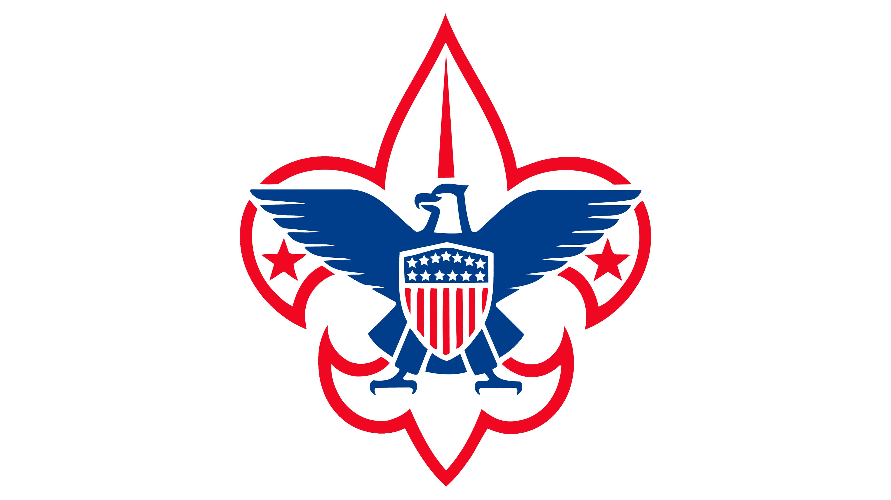

My Projects
Autonomous Pathfinding Robot and Custom Power Supply
2024
- Designed a supercapacitor-based battery and PCB for sub-five-minute charge times
- Integrated Huskylens Artificial Intelligence (AI) camera into an existing C codebase to perform image processing and line tracking.
- Implemented PID-based control systems for speed and steering motors.
Custom Processor for FPGA Development
2024-25
- Designed the system architecture for a 16-bit instruction set.
- Developed an associated assembly language and assembler script in Python.
- Created and maintained the test bench for rapidly changing components.
Semi-Autonomous Maze-Pathfinding Robot
2021-22
- Programmed a control system to navigate autonomously.
- Tested I/O circuits for interfacing with an ARM processor development kit.
Scouts BSA Eagle Rank Project
2018-19

- Designed and Manufactured a Chimney Swift Tower for an endangered bird species